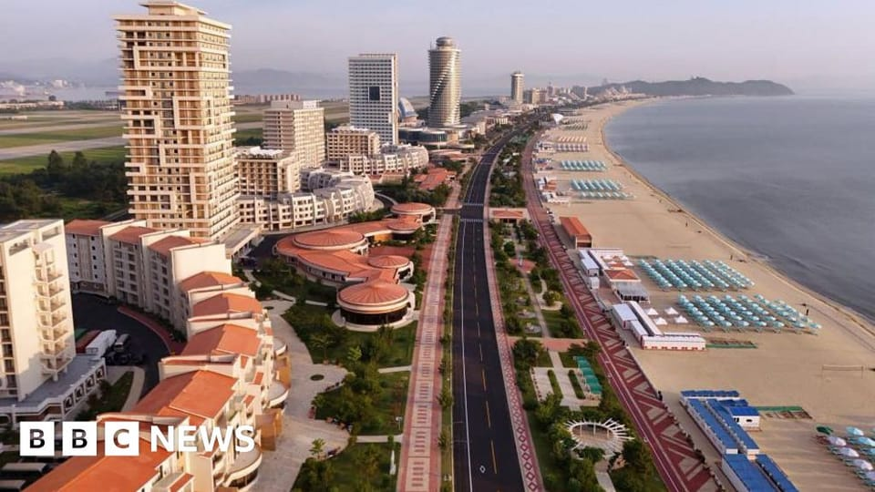

世界苦茶06月27日新闻 | 48条 | 北京密云一小学门口发生撞击事件

北京密云一小学门口发生撞击事件 | 印度最高院裁定跨性别女性有女性身份 | 美新屋销售创3年最大跌幅 | 美国最高院作出限制联邦法院重要裁决 | 伊朗核能力是否被摧毁引发争议
今日三条新闻分析
苦茶数据
美元兑人民币：7.17（昨日7.16，前日7.16）
美元兑日元：144.88（昨日144.54，前日145.36）
上证指数：3424（昨日3453，前日3465）
标普500指数：6181（昨日6092，前日6092）
比特币：107298（昨日107775，前日106441）
布伦特原油：67.57（昨日67.94，前日68.23）
以伊战争
• 伊朗否认恢复核谈判 ：伊朗星期四否认将与美国恢复核谈判。美国总统特朗普前一天在荷兰海牙说，美国和伊朗可能在下周举行会谈，美国中东事务特使维特科夫表示希望与伊朗“达成全面和平协议”。法新社报道，伊朗外长阿拉格齐称，“不能把美方的猜测当真”。阿拉格齐在国家电视台讲话说：“我要明确地指出，双方不存在任何协议、安排或对话以启动新的谈判。”他说：“目前没有任何计划启动谈判。”
• 俄吁伊朗继续合作核查 ：俄罗斯外交部长拉夫罗夫星期四说，俄罗斯希望伊朗继续与国际原子能机构合作。路透社报道，伊朗议会星期三批准一项法案，暂停与国际原子能机构的合作。此前，以色列和美国轰炸了伊朗核设施，旨在阻止德黑兰获得核武器。伊朗否认有任何此类意图。俄罗斯谴责以色列和美国的袭击，并说德黑兰有权开展和平核能计划。
• 格罗西称轰炸评估属政治说法 ：国际原子能机构总干事格罗西说，美国方面称美军空袭伊朗核设施令伊朗核计划倒退“几十年”的说法应是一种“政治评估”。格罗西星期三接受法国电视二台采访时说：“我对于这种关于大规模杀伤性武器的时间评估缺乏信心。我认为这应是一种政治评估。”新华社引述他说，自己无意对“几十年”的说法提出批评，并说伊朗核设施的确遭到严重破坏。美国总统特朗普于美国时间21日晚宣布美军“成功打击”伊朗福尔多、纳坦兹和伊斯法罕三处核设施。25日在荷兰海牙参加北大西洋公约组织峰会时，特朗普称这次行动令伊朗核计划倒退了“几十年”。
• 哈梅内伊祝贺伊战胜美以 ：伊朗最高领袖哈梅内伊6月26日发表电视讲话，这是他自6月19日以来的首次露面。哈梅内伊对伊朗战胜以色列表示祝贺，伊朗军队“突破对方先进的多层防御”成功打击以色列，让其“付出惨重代价”，“以色列在伊朗的打击下几近崩溃并被粉碎”。哈梅内伊对伊朗战胜美国表示祝贺，“美国政权发动了一场直接战争”，“但却没有从这场战争中取得任何成果”。“伊朗狠狠地打了美国一记耳光”。伊朗能够进入该地区重要的美国基地并对其采取行动。哈梅内伊对伊朗人民展现的非凡团结表示祝贺。他说，这种团结将持续下去，在关键时刻必将万众一心。哈梅内伊在讲话中没有提到伊朗的核计划以及当前的核设施状况。国际原子能机构总干事格罗西26日重申，伊朗核设施遭受的打击造成的损害非常大。伊朗外交部发言人25日承认核设施遭到严重破坏。
• 欧洲初步情报显示伊朗基本保住浓缩铀库存： 两名官员说，提供给欧洲各国政府的初步情报评估表明，伊朗的高纯度浓缩铀库存在美国袭击伊朗主要核设施后基本完好无损。这两人表示，情报显示，上周末美国发起空袭时，伊朗的 408公斤接近武器级的浓缩铀并未集中在福尔多，这是该国从事铀浓缩活动的两个主要地点之一。评估发现，这些浓缩铀库存之前已被分散到另外多个地点。欧盟各国政府仍在等待关于福尔多核设施受损程度的完整版情报报告。该处设施建于圣城库姆附近一座大山地下。一份初步报告提到大范围损坏，但并未完全在结构上被摧毁。
中国新闻
• 捷克情报部门6月26日披露，候任中华民国副总统萧美琴2024年3月18日抵达布拉格机场后，被中国大使馆武官驾车跟踪： 中方车辆在路口闯了红灯、差点发生事故，被捷克警方拦停。捷方调查认为，中方武官的意图是跟踪萧美琴的访问行程，不是为了恐吓而蓄意闯红灯；中方情报部门另有制造与萧美琴对峙示威的计划，但没有着手实施。捷方当下通报了相关方面做好预防措施。捷克外交部长事后召见了中国大使冯飚，除此之外没有采取其他反制措施。台湾陆委会6月27日发稿，要求中方道歉并承诺停止对台湾官员和人民的骚扰恐吓行为。
• 香港将设药械监管中心 ：香港卫生署宣布，将于明年底设立香港药械监管中心，并从明年起分阶段推行第一层审批新药注册机制。据香港政府公报，香港卫生署星期四宣布香港药物及医疗器械监督管理中心的成立时间表，以及推行新药第一层审批路线图。香港卫生署署长林文健说：“特区政府致力提升香港药械的监管水平。香港药械监管中心成立后，将整合西药、中药及医疗器械的监管职能，全面提升现行制度。
• 北京小学车祸多童受伤 ：中国北京市密云区一所小学附近发生客车撞人事故，多名受伤儿童送院治疗。北京市公安局密云分局星期四下午在官方微信公众号发布警情通报称，当天下午1时许，在密云区育才路与东门大街交叉口附近发生一起交通事故。经初步调查，35岁韩姓男司机驾驶小客车行至事发路段时，因操作不当与行人发生碰撞，伤者被及时送医治疗。事故正在进一步调查处理中。通报未说明有多少人受伤。
• 宇树科技谈技术竞争 ：有“杭州六小龙”之称的中国前沿科技企业宇树科技创始人王兴兴在一场论坛上说，新兴技术行业要求企业每月保持技术进步，公司此前经历了行业的激烈竞争，底子厚实不少，能经得起考验。综合澎湃新闻和第一财经网报道，王兴兴星期四在天津夏季达沃斯论坛上谈到行业内的竞争时说，在新兴技术行业，企业至少要保持每个月都有明显的技术进步，才能跑在行业前列。王兴兴坦言，“如果你的技术停滞了，确实没人能帮得上你，这是最现实的一件事情”，因此宇树目前工作的最大压力，仍是要保持技术和产品创新。
• 美驻港领事批港打压民主 ：即将离任的美国驻港澳总领事梅儒瑞批评，香港特区政府用《香港国安法》囚禁包括香港媒体大亨黎智英在内等显著民主倡导者，以及对身处海外的政治积极分子进行跨境镇压。据路透社报道，梅儒瑞星期四在美国驻港澳总领事馆举行的美国独立日酒会后对记者，谈及美中关系近期出现的不稳定因素时，聚焦包括黎智英案在内的几个“摩擦点”。77岁的黎智英不承认干犯违反《香港国安法》下的两项控罪串谋勾结外国势力，以及一项串谋发布煽动刊物罪。自2020年12月以来，黎智英已被单独监禁超过1500天。
• 中国男涉无人机偷拍被捕 ：韩国警方公布，两名中国籍男子因非法操作无人机拍摄韩国海军基地，以及停靠在釜山港的美国航母而被逮捕。综合韩联社和法新社报道，韩国釜山警察厅星期四通报，涉及此案的共有三人，他们均为在韩中国留学生，就读于釜山的一所大学。其中两名分别为40多岁和30多岁的男子因涉嫌损害韩国军事利益、违反《军事基地及设施保护法》，于星期三被逮捕；另一名嫌疑人虽被立案调查，但尚未被拘留。警方说，这是首次有外国人因类似罪名在韩国被拘押。
• 马英九谈两岸和平统一 ：正在中国大陆访问的台湾前总统马英九，星期四在莫高窟旁的敦煌研究院发表谈话时，脱稿主张两岸和平民主统一，引起现场一片掌声。据台湾《联合报》报道，马英九在敦煌研究院和马英九基金会主办的两岸共同弘扬中华文化活动致词。除了马英九之外，大陆国台办主任宋涛、中共甘肃省委书记胡昌升、马英九基金会执行长萧旭岑也出席这场活动，共有180余人在场。马英九说，在这里相聚，不只是为了探讨文化的历史脉络，更是希望从中能够寻找创新，在讨论中寻找共识。两岸有不同的社会背景，发展脉络与政策，但对于中华文化的重视与传承是两岸共同的责任。
• 中方批美售台意在毁台 ：中国大陆国防部指责美国对台军售与军援，意在将战火引向台湾，目的是毁台、害台。中国大陆国防部星期四在官网以新闻发言人张晓刚答记者问形式说，中国大陆坚决反对美国与台湾进行任何形式的军事勾连。“不管是军援、军售还是其他什么名目，美方都是想把战火引向台湾，意在毁台、害台，用心极其险恶。”张晓刚敦促美国恪守一个中国原则和中美三个联合公报规定，停止向台独分裂势力发出错误信号，同时正告民进党“倚美谋独”注定失败，“以武拒统”死路一条。
• 中国芬太尼组织藏身日本 ：日本媒体报道称，一个从中国向美国走私芬太尼的组织在日本设置据点，该组织的首脑人物居住在冲绳那霸。据《日本经济新闻》报道，该组织在名古屋设立的法人名为FIRSKY株式会社，它与中国武汉化工厂商湖北精奥生物科技存在人员和资本上的关联，后者的两名高管今年初被美国法院判定串谋进口芬太尼易制毒化学品罪成。美国法院文件显示，一位被称为“日本老大”的人物对湖北精奥进行了出资。该男子疑为中国籍，在社交媒体上自称住在冲绳县那霸市。他还被登记为FIRSKY的代表董事。
• 解放军再绕台演训 ：台湾国防部星期四通报，中国大陆借联合战备警巡之名，对台周边空海域进行骚扰。这是台湾方面本月第四次发布关于联合战备警巡的通报。台湾国防部在官网上说，自星期四早上9时40时起，陆续侦获大陆苏恺30、空警-500等各型主、辅战机及无人机计21架次出海活动，其中16架次逾越台湾海峡中线及其延伸线，进入台湾北、中、东部及西南空域，配合大陆军舰假所谓“联合战备警巡”之名，对台湾周边空、海域进行骚扰。国防部也说，台湾军方运用联合情监侦手段严密掌握，并检派任务机、舰及岸置导弹系统适切应处。
• 救人和尚涉诈骗遭控制 ：中国浙江省一名曾救助多名妇女儿童的和尚涉嫌诈骗被警方采取刑事强制措施，涉案金额或超千万元人民币。有网民发帖称，十几年间救助上百名孕妇及弃婴的道禄和尚因涉案被警方控制。据澎湃新闻报道，浙江省绍兴市上虞区有关部门星期三下午证实，“绍兴市上虞区莲花慈善社”负责人道禄和尚涉嫌诈骗罪，被警方采取刑事强制措施。
• 女生替考被抓学籍取消 ：中国中南财经政法大学的一名学生找人男扮女装替考，她的学籍被开除。有网友星期二在社交平台上发文称，中南财经政法大学某场考试中，一男子着女装替考。相关消息在网上引发热议。中南财经政法大学星期三在官网发布通报称，6月24日进行的《高级会计学》考试过程中，会计学院一名李姓学生有违纪舞弊行为：委托他人代为考试。
• 新规保障被告律师选择权 ：最高法最高检《关于依法保障在押犯罪嫌疑人、被告人选择辩护人权利有关问题的批复》自6月27日起施行。无论官派的法援律师是否已会见过在押被告，其近亲属或监护人另外代为委托的辩护人都有权再会见被告。如果被告选择亲属委派的律师，则官派律师即终止法律援助。
亚太印太新闻
• 朝鲜建成海滨度假区 ：据朝鲜官方媒体报道，朝鲜已建成一个拥有水滑梯和游泳池的大型旅游度假区。法新社报道，据朝中社报道，金正恩星期二出席了元山葛麻海岸旅游区的盛大落成典礼。旅游区可容纳近2万人住宿，平壤方面声称这里是“世界级的文化胜地”。官方媒体发布的照片 显示，金正恩坐在椅子上，看着一名男子在海滩上从水滑梯上飞驰而下。
• 泰国首相视察边境小镇 ：泰国首相佩通坦星期四抵达泰柬边境地区的城镇视察。路透社报道，佩通坦星期四上午抵达泰国沙缴府的亚兰，这个城镇与柬埔寨波贝市隔河相望。她受到众多支持者的欢迎，其中几名支持者举着一块写着“爱你，佩通坦首相”的标语牌。
• 李在明施政强调公正发展 ：韩国总统李在明在国会发表施政演说，谈及内政、经济和外交等多方面政策。李在明在星期四的讲话中强调搞活民生和提振经济是当务之急。韩国联合通讯社引述他说，若当前的低增长状态长期持续，将陷入更难把握机会、竞争和矛盾激化的恶性循环。只有打开“公正发展”之门，创造新的增长动力，人人共享发展机会和成果，才能缓解两极分化和不平等局面。李在明在讲话中一再强调“公正”话题。他呼吁全民携手合作，共同建设“公正社会”，鼓励和认可凭借努力正当获取成功的行为。
• 越南前大亨刑期减至七年 ：越南一家上诉法院将前房地产和航空大亨郑文决的刑期从21年减至七年，郑文决涉嫌1亿4600万美元欺诈和操纵股市罪名。在河内进行为期十天的听证会后，上诉法院星期四撤销了郑文决因操纵股市所判的三年徒刑，并将其因欺诈而判的18年徒刑减至七年。上诉法院还缩短了其他几名被告的刑期。此前，这名大亨的家人支付了近9600万美元的损失赔偿金。
• 印度法院裁定跨性別女性是女性，有「法律上的承認權利」： 在印度具有里程碑意義的一項裁決中，安得拉邦高等法院明確指出，跨性別女性「在法律上有權獲得作為女性的身份承認」。此前有人聲稱「女性身分」應當只限於能夠生育者，法院駁回了這一說法。主審法官 Venkata Jyothirmai Pratapa 認為，將女性的定義與生育能力綁定是「法律上站不住腳的」，並違背了印度憲法中「法律面前人人平等」的原則。她援引了印度最高法院2014年的裁定，即「第三性別」個體享有法律權利，並指出剝奪跨性別女性作為女性自我認同的權利「構成歧視」。該案件源於2022年，跨性別女性 Pokala Shabana 根據印度刑法尋求法律保護，聲稱她遭到岳家人的虐待。 （翻評：噢...印度又有一個領域比中國先進了。印度的赤貧人口低於中國，高中毛入學率高於中國，當然還有很多很多。）
科技新闻
• 苹果为避罚调整欧区政策 ：苹果公司周四对其欧洲App Store政策进行了修改，称这将有助于避免欧盟监管机构对公司五亿欧元的巨额罚款。苹果表示，将对欧洲的App Store政策进行多项调整，包括为开发者提供更多途径，引导用户在App Store之外购买更优惠的产品。苹果还将为欧洲的所有应用开发者引入一套新规则，包括一项名为“核心技术佣金”的费用，即在App Store之外进行的所有数字交易收取5%的费用。苹果表示本不想做出改变，但迫于欧盟委员会的压力不得不进行更新，公司可能面临每天高达5000万欧元的罚款。苹果声称，其相信自己的计划符合 DMA 规定，并将避免罚款。
• 特斯拉高管因销量低被解雇 ：据知情人士透露，由于特斯拉北美和欧洲地区的销量下滑以及该电动汽车品牌的受欢迎程度下降，埃隆·马斯克解雇了特斯拉北美和欧洲地区的运营主管奥米德·阿夫沙尔。阿夫沙尔于2011年加入特斯拉担任工程师，后来成为马斯克的得力助手之一，并于去年10月升任副总裁，负责改善北美和欧洲两个关键地区的业务。阿夫沙尔的离职发生在第二季度结束前几天，此前有消息称，特斯拉在欧洲的电动汽车销量连续第五个月下滑。今年美国市场的销量也出现下滑，而这家总部位于奥斯汀的公司最大的市场中国，5月份销量下降了15%。
• 英伟达市值或破6万亿美元 ：据 Loop Capital 表示，过去几年推升英伟达股价的人工智能趋势未见减弱迹象，而且可能会推动这家芯片制造商的市值超越其他公司，最终达到 6 万亿美元，这一估值比该公司目前的3.6万亿美元高出65%以上。分析师阿南达·巴鲁阿称，我们正进入下一波生成式人工智能应用的黄金浪潮，而英伟达则处于又一轮强于预期的需求前端。他将英伟达目标价从175美元上调至250美元，成为华尔街分析师给出最高目标价。目前目标价均值约173美元，意味着未来一年上涨空间约17%。
• YouTube直播门槛升至16岁 ：今年二月份，谷歌宣布将开始使用机器学习来估算YouTube用户的真实年龄，旨在识别那些谎报出生日期的人。该平台现在准备对直播内容实施新的年龄限制来进一步收紧规定。从 7月22日起，用户必须年满16岁才能在YouTube上进行直播。此前只要符合其他条件，13岁及以上的用户即可进行直播。虽然13至15岁青少年仍可出现在直播中，但必须有成年人在场并出镜。否则实时聊天可能会被禁用或直播被下架。青少年也可以通过自己的频道进行直播，但前提是必须添加一名成年人作为频道管理员，通过YouTube直播控制室发起直播，并在镜头中全程陪同。
• AI视频掀莎拉弹劾舆论战 ：菲律宾副总统莎拉的弹劾案被参议院退回众议院后，两段支持与反对弹劾她的街头访问视频在网上掀起舆论战，但这两段视频其实都是人工智能生成的。其中一段视频显示，一名年轻男学生质问“为何要针对副总统”，并称弹劾莎拉是出于政治动机。另一段视频是一名卖鱼老妇斥责参议院失职，未审理弹劾案。她说：“如果是穷人偷东西，你们就想立刻把他们关起来；副总统贪污几百万，你们却拼命保护她。”
• Salesforce称AI替代半数工作 ：Salesforce Inc. 首席执行官马克·贝尼奥夫周四表示，公司已经利用人工智能实现较大部分工作的自动化，这是另一家企业宣扬新兴技术取代劳动潜力的例子。贝尼奥夫在接受采访时表示，人工智能已完成 30%至50%的工作，包括软件工程和客户服务等工作。科技领袖们越来越直言不讳地谈论人工智能取代人类工作者的可能性。这家旧金山软件公司专注于销售一款AI产品，Salesforce承诺无需人工监督即可处理客户服务等任务。马克·贝尼奥夫表示，该工具的准确率已达到约93%，其中服务包括华特迪士尼公司等大客户，而人类可以继续从事更高价值的工作。
• 人们使用AI作为陪伴比我们想象的要少得多： 人们过度关注于如何转向AI聊天机器人寻求情感支持，有时甚至建立亲密关系，这常常让人误以为这种行为很常见。Anthropic的一份新报告揭示了不同的现实：事实上，人们很少寻求 Claude 的陪伴，仅有 2.9% 的情况下会向该聊天机器人寻求情感支持和个人建议。该公司在报告中强调：陪伴和角色扮演合计占对话总量的不到 0.5%。Anthropic 表示其研究旨在深入了解人工智能在“情感对话”中的应用。在对用户使用Claude免费版和Pro版进行的 450 万次对话分析，该公司表示绝大多数Claude使用场景都与工作或生产力相关，用户主要用聊天机器人进行内容创作。
财经新闻
• 中方回应稀土出口问题 ：欧盟驻华大使呼吁中国解决对欧出口稀土磁铁问题后，中国商务部说，已依法批准一定数量的稀土相关物项出口申请，并称愿就此与相关国家的出口管制沟通对话，促进便利合规贸易。中国商务部新闻发言人何亚东星期四在发布会上回应相关问题时说，中国一贯高度重视维护全球产供链的稳定与安全，依法依规不断加快对稀土相关出口许可申请的审查，已经依法批准一定数量的合规申请，并将持续加强合规申请的审批工作。他说，中方愿就此进一步加强与相关国家的出口管制沟通对话，积极促进便利合规贸易。
• 光伏产能过剩库存高企 ：一份报告显示，中国光伏业产能过剩，价格持稳难度加剧，终端需求尚待提振。据人民财讯报道，TrendForce集邦咨询发布的报告显示，在多晶硅环节，7月下游订单较少，且硅片本身亏损状况已较为严重，拉晶端为下月备货的采购意愿持续低迷。在硅片环节，截至本周，硅片库存仍然保持在20亿片以上，终端需求处于真空期，即便下月头部专业化厂商有减产计划，也难阻止库存水位上行。
• 瑞银预估美对华关税将降 ：投资银行瑞银预估，到今年年底，美国对中国的关税会降到30%至40%。据《联合报》报道，瑞银财富管理投资总监办公室南亚太区投资总监郑汪清星期三在瑞银财富管理举办的“2025年下半年经济展望”活动上研判，到年底时，美国有效关税税率将落在15%左右，但不确定性仍然很高。郑汪清分析，中国目前的优势是稀土，尤其重稀土在全球市占率为98%，在电动车等电子产品里都会使用；因此中美应该会进行谈判，美国对中国的关税降到30%至40%。
• 中国或将成锂产第一国 ：总部位于伦敦的咨询机构Fastmarkets预测，中国将在2026年超越澳大利亚，成为全球最大的电池金属锂的生产国。据路透社报道，自2017年超越智利以来，澳洲一直是全球最大的锂矿生产国。但在全球锂价下跌的背景下，澳洲的矿企已开始削减产量或推迟扩产计划。Fastmarkets电池原材料研究主管卢斯蒂说，中国在开发矿产资源方面有非常明确的国家战略，并预测中国矿企的锂产量明年将比澳大利亚多出8000至1万公吨。
• 美允乙烷出口中国但禁卸货 ：美国商务部据报已通知相关企业，可将乙烷装船运往中国，但未经授权不得在中国卸货。路透社引述知情人士报道，美国商务部星期三向Enterprise Products和Energy Transfer两家公司发出信函。Enterprise Products收到的信函写道：“本信函授权Enterprise Products装载乙烷，并可运往包括中国在内的外国港口停泊。但未经进一步授权，不得向位于中国的实体完成此类出口。”
• 欧洲推“弃籍税”防富人逃税 ：好些英国富豪近期离境，前往摩纳哥、瑞士和迪拜等避税天堂。但许多怀揣类似梦想的欧洲富豪却发现，他们离开并非易事。欧洲大陆的高税率国家正试图通过对离境富人征收资产价值税来减缓他们离境。这项名为“弃籍税”的税制旨在让他们三思或在离开时缴纳应付的份额。近几个月来，德国、挪威和比利时扩大或考虑扩大“弃籍税”的征收范围。10月，荷兰议会要求政府研究通过此类征税打击避税。英国工党政府也面临着征收类似税款的呼声。
• 美新屋销售创三年最大跌幅 ：美国5月新屋销售创下近三年来的最大降幅，原因是大量销售激励措施未能有效缓解负担能力限制。根据星期三公布的政府数据，新建单户型住宅销量下降13.7%，至折合年率62.3万套，为七个月来的最低水平。这低于所有接受彭博社调查的经济学家的预期。最新数据显示，由于抵押贷款利率徘徊在7%附近、关税推高材料成本、劳动力市场放缓等经济挑战日益严峻，市场上的库存不断增加。尽管建筑商推出补贴以降低购房成本，但效果逐渐减弱，许多建筑商放缓了建房步伐。
• 欧盟已收到美国的"最新"贸易谈判提案 ：欧盟执委会主席冯德莱恩表示，欧盟已收到关于进一步关税谈判的"美国最新文件"。她在布鲁塞尔的欧盟峰会后对记者说，"所有选项都摆在台面上"，"我们正在评估...我们今天传达的信息很明确。我们已准备好达成协议。同时，我们也在为可能无法达成令人满意的协议做准备。这就是我们就重新平衡清单进行磋商的原因，我们会在必要时捍卫欧洲的利益。"法国总统马克龙表示，法国希望与美国迅速达成一项务实的贸易协议，但法国不会接受不平衡的条款。
俄乌战争
• 中方否认援俄，提劝和立场 ：中国外交部星期四强调，中国在俄乌战争中始终坚持劝和促谈，从不向交战方提供武器。中国外交部发言人郭嘉昆在例行记者会上说，中国始终坚持劝和促谈，积极推动危机政治解决，从不向交战方提供武器，严格管控两用物项出口。郭嘉昆也指责北约有关人士渲染国际地区紧张局势，诋毁中国正常军力建设，无非是为北约大幅增加军费、肆意越界扩权、图谋东进亚太寻找借口。
• 俄推国家即时通讯平台 ：俄罗斯计划推出一款国家运营的即时通讯应用程序，旨在承载部分政府服务，在国内为 WhatsApp 和 Telegram 等现有平台提供一个本土竞争对手。总统弗拉基米尔·普京周二签署了一项法律来创建该平台，旨在促进文件存储、消息传递、银行业务和其他公共和商业服务。据国际文传电讯社报道，俄罗斯数字发展部长马克苏特·沙达耶夫本月早些时候表示，该平台将以VK内置的即时通讯工具为基础进行开发。VK是一家由国家关联实体控制的广泛使用的俄罗斯社交媒体服务。俄当局声称，新的即时通讯工具将能够与流行平台共存，前提是后者保持合法合规。
• 俄羅斯銀行擔憂債務危機將至，戰爭加劇經濟壓力： 俄羅斯銀行高層警告稱，未來12個月內可能爆發系統性銀行危機的風險「可信且嚴重」，原因是越來越多的企業和個人客戶無法按時償還貸款。俄羅斯銀行資產負債表上的壞賬被估計達數萬億盧布，許多借款人選擇延期付款，而官方數據可能掩蓋了債務問題的真實嚴重程度。隨著經濟增長放緩、通脹加速和勞動力短缺加劇，俄羅斯的經濟前景日益惡化，這也將進一步引發外界對普京總統是否有能力持續推進對烏克蘭戰爭的質疑。
国际新闻
• 阿联酋中立立场受挑战 ：阿联酋在全球动荡中屡次展现韧性，从2010年爆发的阿拉伯之春至2022年的俄乌战争都成功吸引资金流入，但以伊冲突让阿联酋长期奉行的“中立且开放经商”立场经受严峻考验。以色列自6月13日对伊朗发动跨境袭击，美国也在21日空袭伊朗核设施。尽管美国总统特朗普星期二宣布的停火协议似乎正在发挥作用，但专家指出，由于中东地缘政治风险已迅速浮上台面，内部仍存在一些紧张情绪。迪拜安全服务供应商Crownox负责人纳赛尔-埃丁说，虽然目前局势可控，但此次事情意义深远，并释放出一个任何行动都不再是禁止的信号。
• 白宫拟终止战争罪项目资助 ：根据三名知情美国消息人士及路透社查阅的政府内部文件，白宫已建议终止美国对近20个在全球范围内开展战争罪及问责工作项目的资助。报道称，这些项目涉及缅甸、叙利亚以及俄罗斯涉嫌在乌克兰犯下的暴行。消息人士和路透社看到的名单，还包括在伊拉克、尼泊尔、斯里兰卡、哥伦比亚、白罗斯、苏丹、南苏丹、阿富汗和冈比亚等项目。
• 贝佐斯接近特朗普争取合同 ：美国总统特朗普与马斯克之间的不合正在给杰夫·贝佐斯成为赢家创造机会。据知情人士透露，蓝色起源创始人贝佐斯本月与特朗普至少交谈了两次。蓝色起源首席执行官戴夫·林普在六月中旬会见了白宫幕僚长苏茜·威尔斯。这些知情人士称，在与特朗普及其团队的至少一部分谈话中，贝佐斯和蓝色起源的其他高管提出希望获得更多政府合同。知情人士说，特朗普已同贝佐斯讨论了希望在自己的任期内看到载人登月任务。白宫官员表示，最近几个月，贝佐斯一直试图拉进与特朗普的关系，甚至邀请特朗普参加他定于本周末在威尼斯举行的众星云集的婚礼。
• 中非踩踏事故致29人死亡 ：中非共和国首都班吉的巴泰勒米·博甘达高中6月25日突发电力变压器爆炸事故，并引发踩踏事件，造成至少29人死亡、250余人受伤。事故发生时，约有5300名学生正在参加考试，现场人员一度陷入恐慌，在逃离过程中发生严重踩踏，死伤者目前已被送往首都多家医疗机构。最终伤亡数字尚无法确定。
• 美国会议员努力推进“大而美”法案，贝森特要求删除“报复性”税收提案 ：美国财长贝森特要求国会共和党人从他们的全面预算立法中删除一项针对外国投资者的"报复性税收"提案，议员们目前正在努力推进该法案。这项被称为“899条款”的提案将赋予特朗普新的权力，对那些被发现对美国公司征收“不公平”税项的国家的投资者征收最高20%的税。特朗普在一次活动中谈到该法案时表示：“这是我们议程的最终编纂。”当被问及他是否相信国会能在7月4日独立日假期前完成工作时，他回答说："我们希望如此"。
• 美国最高法院以6比3的投票结果裁定，联邦法院无权在全国范围内发布禁令： 本案争论的焦点本应是特朗普废除“出生公民权”的行政令是否违法。但由大法官埃米·科尼·巴雷特撰写的多数意见却将关注点放在了联邦法院是否有权在全国范围内发布普遍禁令。保守派大法官认为，普遍禁令可能超过国会赋予联邦法院的衡平法权力。联邦法院的禁令不应超过向原告提供完全救济所需的范围。自由派大法官反对称，此举无视衡平法的基本原则以及向非当事人提供禁令救济的悠久历史。最高法院要求下级法院根据其意见重新考虑此前的裁决结果，同时表示特朗普废除“出生公民权”的行政令在最高法院意见发布的30天内无法生效。特朗普随后召开发布会，将最高法院的裁决称为重大胜利，表示将立即推进被法官阻止的政策，包括对“出生公民权”的限制。
• 教宗利奧抨擊世界領袖「為壓倒他人而拋棄國際法與人道主義」，稱其「不配與可恥」： 剛剛就任的梵蒂岡元首——教宗利奧十四世——近日在社交媒體上批評當今世界各國領導人拋棄國際法與人道法，引發網民熱議與不滿。在美國對伊朗三處核設施進行轟炸後僅一週，以及伊朗與以色列之間達成脆弱停火協議的數日後，他在X平台發文表達失望之情。他寫道：「令人痛心的是，如今國際法與人道主義法的約束力似乎已蕩然無存，取而代之的是自以為可以壓倒他人的特權。這對於人類和各國領袖來說，都是不配且可恥的行為。」